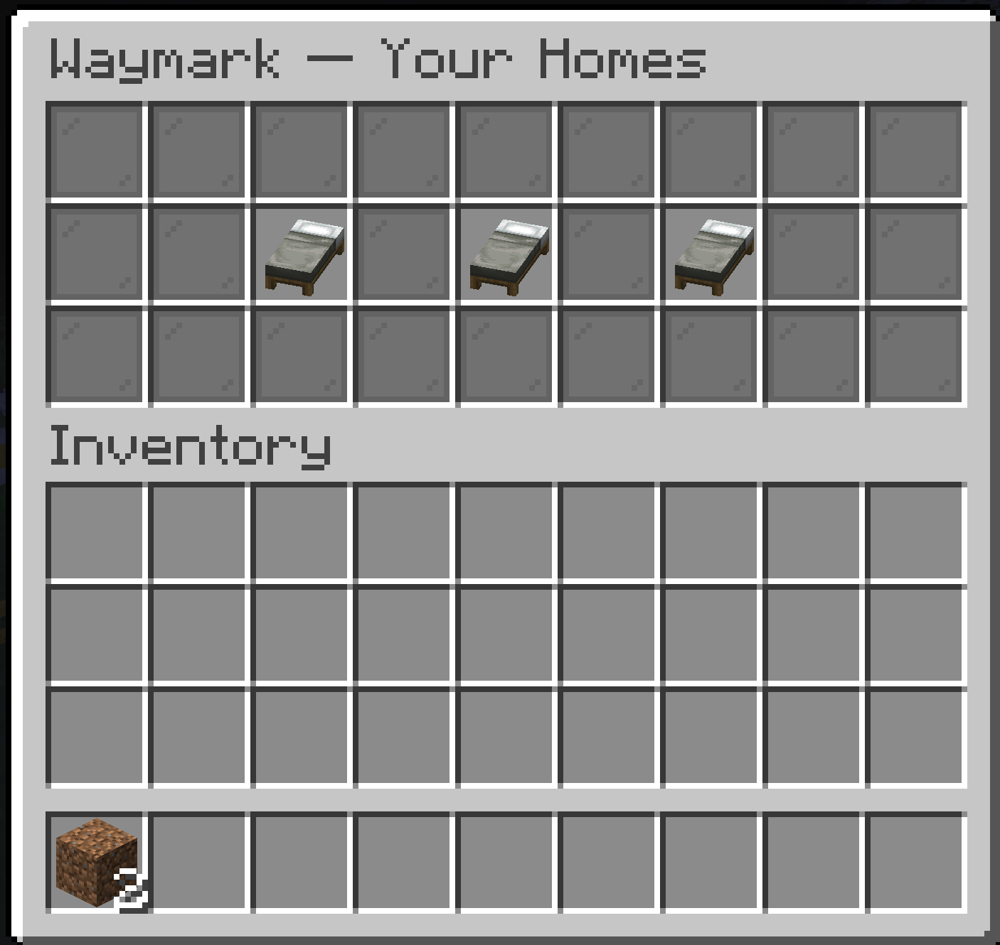
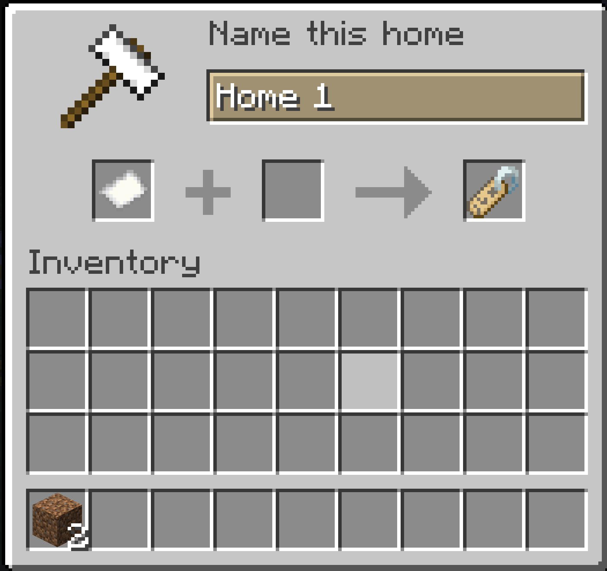
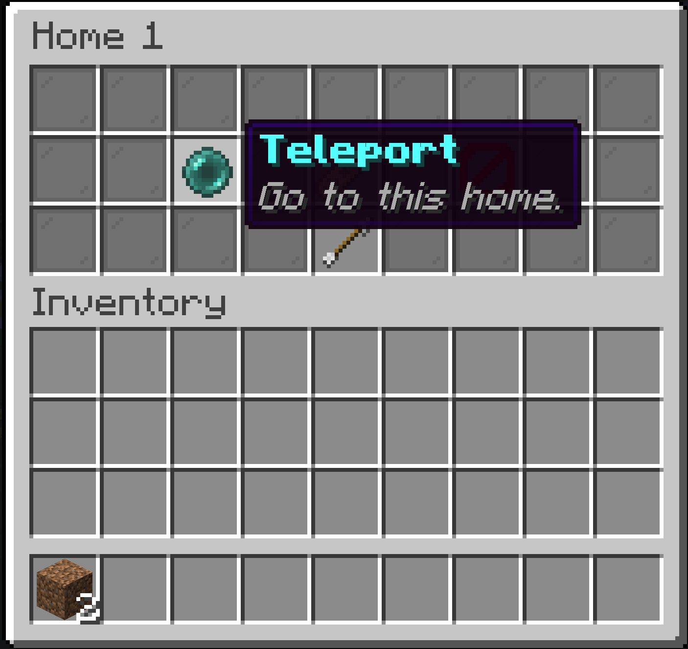

What it does
Three homes, one menu
Type /home and a menu opens with your three home slots. Empty slots show New Home — click one to claim it right where you stand.
Name everything
When you create a home you're asked to name it, and you can rename it any time. The name shows up right on the menu button.
Teleport, rename, delete
Click an existing home to open its options: teleport back to the exact spot where it was created, give it a new name, or delete it.
Nothing to install for players
Waymark runs entirely on the server using vanilla menus. Players on unmodded clients get the full experience.

/home — your three home slots

How it works
Type /home. A menu opens with your three home slots.
Click a “New Home” slot. An anvil screen asks you to name the home. Confirm, and the home is saved at the exact spot you were standing.
Click an existing home to open its options: Teleport brings you back to where the home was created, Rename asks for a new name, and Delete frees the slot back to “New Home”.
Install on your server
Install Fabric Loader on your Minecraft 26.1.2 – 26.2 server.
Drop Fabric API and Waymark into the server's mods/ folder.
Restart the server. That's it — players can use /home immediately.
server/
├── mods/
│ ├── fabric-api-0.154.x.jar
│ └── waymark-1.0.0.jar
└── ...Good to know
| Command | /home — opens the home menu (that's the only command!) |
|---|---|
| Homes per player | 3 |
| Dimensions | Homes work across the Overworld, Nether, and End |
| Storage | Saved per world in waymark_homes.json — survives restarts, no database needed |
| Requires | Fabric Loader ≥ 0.19, Fabric API, Java 25+ |
| Client mod? | Not needed. Vanilla clients see everything. |